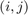
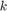
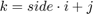
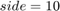

Data Clustering: Votes of MPs
Contents
set(0, 'DefaultFigurePosition', get(0,'screensize')); clc; clear; close all;
Introduction
In this exercise we will try to get some insights of the swedish parlia- ment ''political distribution'' by exploring data corresponding to the different MPs (such as their votes, their origins etc.).
to member of parliament (MP)
This is the meaning of each variable loaded from politics:
- parties = party membership of each MP
- sex = sex of each MP
- districts = district of each MP
- votes = list of 31 votes for each MP
- names = name of each MP
Plus, there are some additional variables:
- sex_colormap = colormap for sex
- sex_labels = labels for sex
- party_colormap = colormap for party
- party_labels = labels for party
For instance, let us display some of these labels for the 10 first MPs.
politics; table(names(1:10), sex_labels(((sex(1:10) + 1)')), ... party_labels(((parties(1:10) + 1)')), districts(1:10), ... 'VariableNames', {'Name', 'Sex', 'Party', 'District'})
Preparing the data
Setup
eta = 0.2; num_of_epochs = 50; [num_of_MP, num_of_votes] = size(votes);
We will work with a 2D topology in which the units are connected in a grid-like fashion. The neighborhood of a unit is defined by thresholding the manhattan distance between the unit and the others.
From an abstract point of view the units are organized in a 2D square grid, and their coordinates are given by a  pair. In practice, we will assign an index  to every unit so that , where  in this example.
side_of_topologic_grid = 10; num_of_units = side_of_topologic_grid^2; [x, y] = meshgrid(1:side_of_topologic_grid, 1:side_of_topologic_grid); is = reshape(x, 1, num_of_units); js = reshape(y, 1, num_of_units); weights = rand(num_of_units, num_of_votes);
Example
figure; % Example 1 k_winning_unit = 27; neighborhood_radius = 2; k_neighbors = neighborhood2(k_winning_unit, neighborhood_radius, side_of_topologic_grid); subplot(1,2,1); hold on; plot(js, is, '.b', 'MarkerSize', 15); plot(js(k_neighbors), is(k_neighbors), '.m', 'MarkerSize', 30); plot(js(k_winning_unit), is(k_winning_unit), '.r', 'MarkerSize', 40); title(sprintf('Winner: (%d,%d) Radius: %d', ... is(k_winning_unit), js(k_winning_unit), neighborhood_radius)); axis ij; axis image; xlim([0, side_of_topologic_grid+1]); ylim([0, side_of_topologic_grid+1]); % Example 2 k_winning_unit = 67; neighborhood_radius = 4; k_neighbors = neighborhood2(k_winning_unit, neighborhood_radius, side_of_topologic_grid); subplot(1,2,2); hold on; plot(js, is, '.b', 'MarkerSize', 15); plot(js(k_neighbors), is(k_neighbors), '.m', 'MarkerSize', 30); plot(js(k_winning_unit), is(k_winning_unit), '.r', 'MarkerSize', 40); title(sprintf('Winner: (%d,%d) Radius: %d', ... is(k_winning_unit), js(k_winning_unit), neighborhood_radius)); axis ij; axis image; xlim([0, side_of_topologic_grid+1]); ylim([0, side_of_topologic_grid+1]);
Training
for epoch = 1:num_of_epochs for mp_idx = 1:num_of_MP mp = votes_(mp_idx, :); diff = repmat(mp, num_of_units, 1) - weights; dist = sum(diff.^2, 2); [~, k_winning_unit] = min(dist); % Initialize update function with zeros update_function = zeros(num_of_units, num_of_votes); % row axis neighboor_row_min = max(1, k_winning_unit - 1); neighboor_row_max = min(side_of_topologic_grid, k_winning_unit + 1); % col axis neighboor_col_min = max(1, k_winning_unit - 1); neighboor_col_max = min(side_of_topologic_grid, k_winning_unit + 1); % Update update function (1s corresponding to active units) update_function(neighboor_row_min : neighboor_row_max, ... neighboor_col_min:neighboor_col_max) = 1; % Update weights weights = weights + update_function .* (eta * diff); end end